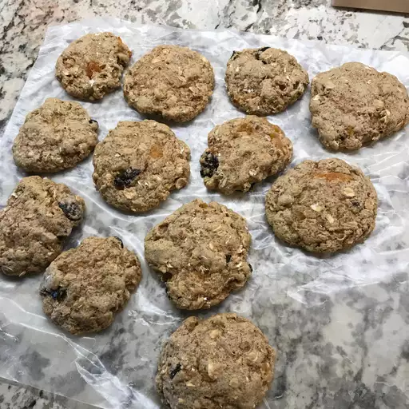

Breakfast Cookie

Description
The trick is to underbake them a little bit, and the result is the soft cakey cookie you know and love!
Ingredients
- 2 cups brown sugar
- 2 1/2 cups rolled oats
- 4 cups all-purpose flour
- 1 tablespoon baking soda
- teaspoon baking powder
- 1 teaspoon salt
- 1 1/2 teaspoons ground cinnamon
- 1/4 cup canola oil
- 1/2 cup prune puree
- 2 tablespoons water
- 5 egg whites
- 1 1/2 teaspoons vanilla extract
- 3/4 cup raisins
- 1/4 cup chopped walnuts
- 1/3 cup chopped dried apricots
Steps
- Preheat oven to 350 degrees F (175 degrees C). Grease cookie sheets or line with parchment paper.
- In a large bowl, stir together the brown sugar, oats, flour, baking soda, baking powder, salt and cinnamon. Make a well in the center and pour in the canola oil, prune puree, water, egg whites and vanilla. Mix until well blended. Stir in the raisins, walnuts and apricots. Scoop cookies using an ice cream scoop, or roll into golf ball sized balls. Place cookies 2 inches apart onto the prepared cookie sheets and flatten to 1/2 tall with wet hands. These cookies do not flatten very much while baking.
- In the preheated oven, bake 8 minutes for chewy cookies 10 to 12 minutes for dry cookies. Cookies will not get crisp. Remove from cookie sheets to cool on wire racks.
Home